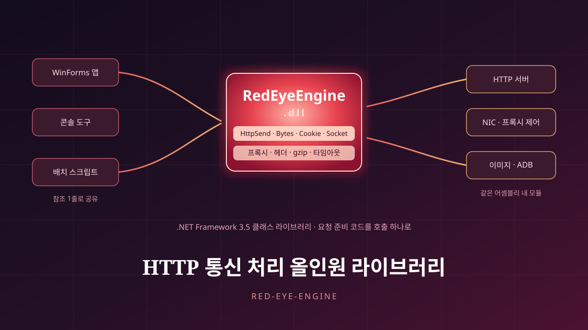

Red-Eye-Engine — All-in-One C# Library for HTTP Communication
Red-Eye-Engine — HTTP 통신 처리 올인원 C# 라이브러리

A C# class library that bundles HTTP request and response handling into a single dynamic-link library (DLL). At its centre is a set of transport functions wrapping proxy, timeout, arbitrary headers, automatic gzip/deflate decompression, and cookie assembly; around that core the same assembly gathers adjacent utilities for image adjustment, network-adapter control, ADB integration, and settings-file I/O.
The Engine class exposes four transport paths — HttpSend, HttpSendBytes, HttpSendSecureCookie, and HttpSendSocket — alongside string utilities for URL encoding/decoding, MD5 hashing, cookie merging, and Korean jamo decomposition and composition. It is a class library targeting .NET Framework 3.5 (OutputType=Library, AssemblyName=RedEyeEngine), published on 8 August 2023 in six commits and left unchanged since.
Structure · Design
The whole thing is one assembly (RedEyeEngine.dll, a class library targeting .NET Framework 3.5) with role-specific classes laid out flat beside one another. The centre is the Engine class, which wraps HttpWebRequest in four transport paths: (1) HttpSend for a string body, (2) HttpSendBytes for a byte-array body, (3) HttpSendSecureCookie, which returns the response cookie collection, and (4) HttpSendSocket for socket-level transport. All four take the proxy as a single 'host:port' string, accept a timeout, and take headers as a list of 'Name: Value' strings, mapping entries such as User-Agent, Content-Type, Referer, KeepAlive, and automatic gzip/deflate decompression onto the corresponding request properties. Responses come back either whole (ALL) or body-only (CONTENTS). Attached to the same class are string utilities: cookie merging (CookieProcess, CookieAssemble), URL encoding and decoding, MD5 hashing, a server-certificate validation callback, lookups for system information and the current public IP, and Korean jamo decomposition, composition, and Korean-to-English typing conversion. The surrounding modules split by function. CoreInternetProtocols enumerates NIC devices and changes the proxy, MAC address, IP/subnet/gateway/DNS, and adapter enable state; CoreImage handles Bitmap contrast, brightness, gamma, grayscale, inversion, resizing, rotation and flipping, and borders; CoreADB runs adb commands and changes an Android device's IP, checks its screen state, and controls it; CoreInternetExplorer automates the Internet Explorer COM objects (SHDocVw, MSHTML) and sends window messages; CoreFramework and CoreSettings cover file reading and writing, timer waits, and saving and loading INI-style settings.
Design goals
The point was to write the HTTP-calling code properly once instead of rewriting it for every new tool. In .NET, HttpWebRequest exposes proxy, timeout, headers, compression, and cookies through separate properties and types, so sending a single request means repeating the same setup every time. That setup was folded into a handful of string arguments, with the result handed back as a string from one call. Shipping it as a DLL follows from the same idea: fixing the calling convention in one assembly means a new project only has to add a reference, and several tools end up sharing the same communication code. For work that does not stop at HTTP — touching up an image returned in a response, changing the network-adapter settings a request goes out on, or driving a connected Android device — the adjacent modules live in the same assembly, so one reference brings along everything needed. There have been no new commits since it was published in August 2023; the repository now stands as a record of an earlier generation of working infrastructure that has served its purpose.